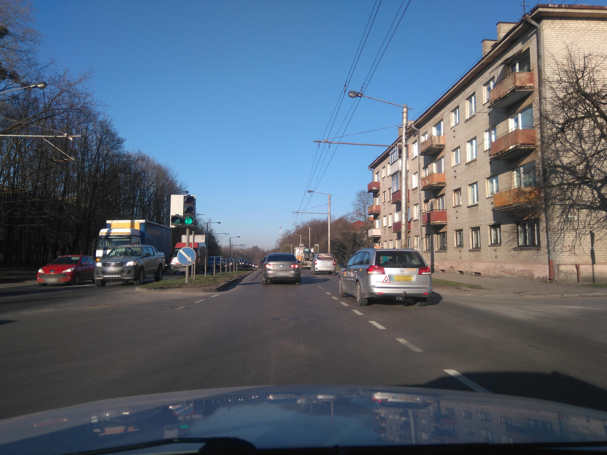
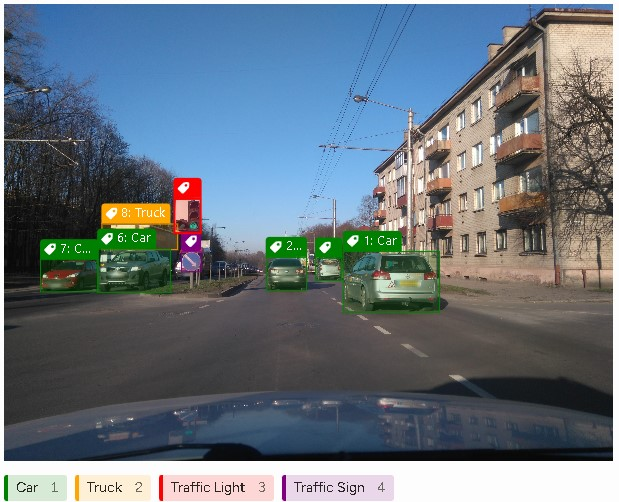
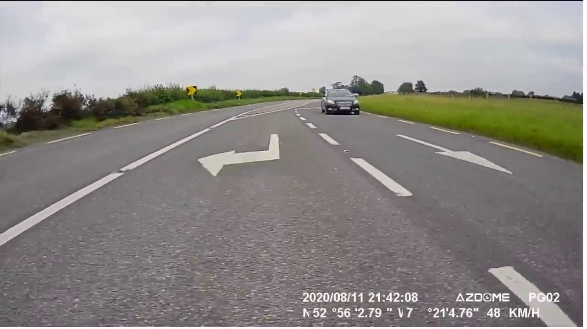
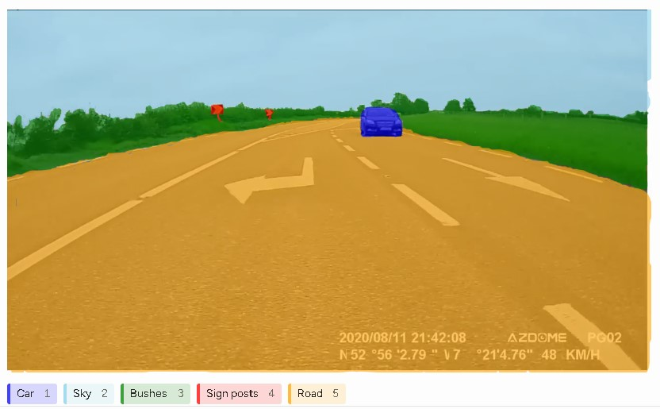
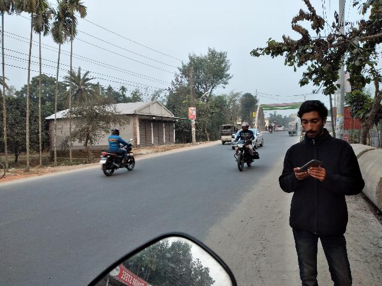
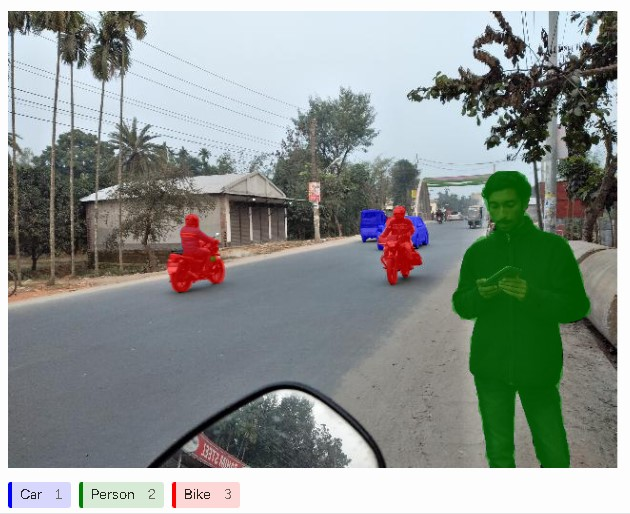
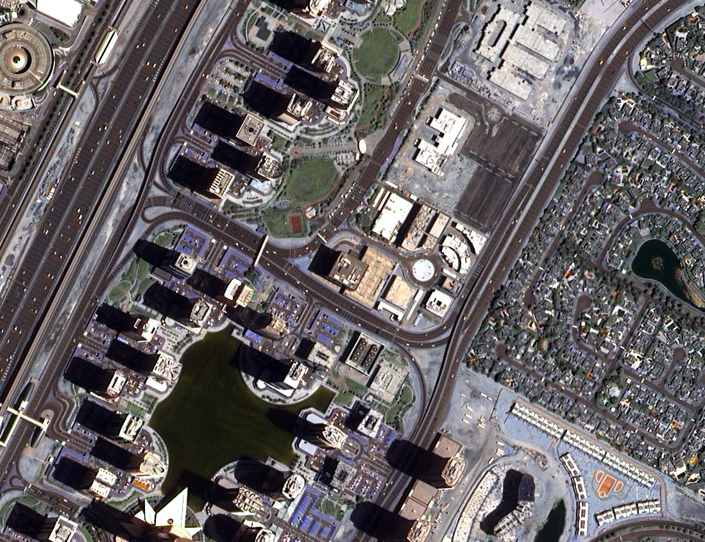
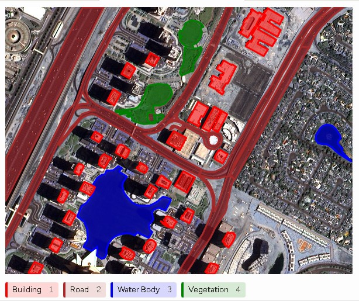
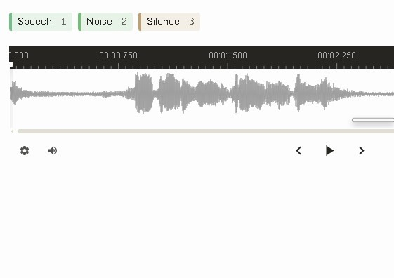
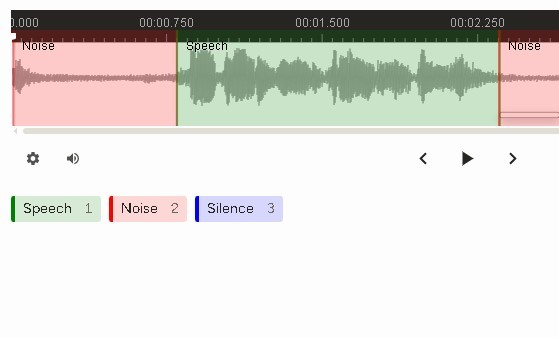

PRACTITIONER PORTFOLIO
Data Annotation & AI Training Portfolio
Data Annotation | Computer Vision | NLP | Audio | Video
I am a data annotation practitioner with hands-on experience creating structured training data across computer vision, natural language, audio, and video annotation tasks. My practical experience includes object detection, segmentation, polygon annotation, video object tracking, named entity recognition, intent classification, sentiment annotation, audio segmentation, and transcription. I focus on accurate, consistent, and guideline-driven annotation to produce high-quality datasets for AI and machine-learning applications.
Skills & Capabilities
Computer Vision
- Object Detection
- Semantic Segmentation
- Instance Segmentation
- Polygon Segmentation
- Video Object Tracking
Natural Language Processing
- Named Entity Recognition (NER)
- Intent Classification
- Sentiment Analysis
Audio & Speech
- Speech Segmentation
- Noise & Silence Detection
- Audio Transcription
Tools & Workflow
- Label Studio
- Guideline QA & Quality Control
01. Object Detection
Computer VisionTask: Identify and locate objects within an image using bounding boxes.
What I Annotated: Urban traffic scene featuring cars, traffic lights, truck, and traffic sign.
Annotation Method: Rectangle / Bounding Box
Labels Used: Car Truck Traffic Sign Traffic Lights
Input (Original Image)

Annotation Output

What This Demonstrates: Ability to identify individual instances of target classes and accurately localize them using rectangular bounding-box coordinates.
Quality Considerations & Validation
- Bounding boxes tightly fit target boundaries without truncating key features.
- Objects are assigned the correct labels with zero class confusion.
- No relevant target objects missed within the visual field.
- Boxes do not unnecessarily capture excessive background noise.
02. Semantic Segmentation
Computer VisionTask: Identify objects and environmental regions at a fine pixel level rather than drawing approximate bounding rectangles.
What I Annotated: Complex streetscape with overlapping environmental regions and foreground entities.
Annotation Method: Brush / Pixel Masking
Labels Used: Road Sky Bushes Sign Posts
Input (Original Image)

Annotation Output

What This Demonstrates: Experience with dense pixel-level image annotation and distinguishing full semantic regions (like road and sky) from distinct object instances.
Quality Considerations & Validation
- Mask edges adhere strictly to object contours with no pixel bleed or gaps.
- Distinct object instances are cleanly separated without mask overlap.
- Background categories (road, sky, vegetation) are exhaustively classified.
03. Instance Segmentation
Computer VisionTask: Identify and segment individual objects at the pixel level, creating a separate mask for each object instance.
What I Annotated: Individual cars, people, and motorcycles in a street scene, with each object separately segmented from the surrounding image.
Annotation Method: Brush / Pixel Masking
Labels Used:
Person
Bike
Car
Input (Original Image)

Annotation Output

What This Demonstrates: Ability to create precise pixel-level masks for individual object instances and distinguish separate objects belonging to the same category.
Quality Considerations & Validation
- Each object instance has its own separate pixel mask.
- Mask boundaries closely follow the actual contours of each object.
- Objects of the same class are kept as distinct instances.
- Masks avoid unnecessary overlap between different object instances.
- Small or partially visible objects are carefully captured where applicable.
04. Polygon Segmentation (Aerial / Geospatial)
Computer VisionTask: Precisely trace complex or angled objects in high-resolution satellite/aerial imagery using multi-point polygon vectors.
What I Annotated: High-altitude satellite view of coastal and residential structures.
Annotation Method: Polygon Vector Tool
Labels Used: House Water Bodies Building Road
Input (Aerial Imagery)

Annotation Output

What This Demonstrates: High-precision spatial tracing capability required for GIS, geospatial analytics, and aerial mapping projects where bounding boxes capture excessive non-target background.
Quality Considerations & Validation
- Polygon nodes accurately placed at structural corners and curves.
- No overlapping polygons on adjacent residential rooftops or marina boundaries.
- Consistent vertex density across complex structural geometric features.
05. Video Object Tracking
Computer VisionTask: Track moving vehicles across multiple video frames while maintaining consistent object identity (ID persistence).
What I Annotated: Multi-frame traffic video sequence tracking moving vehicles.
Annotation Method: Video Bounding Box Interpolation & Track ID
Labels Used: Car_01 Car_02
Frame Sequence (Original Video)
Tracking Interpolation Output
What This Demonstrates: Ability to maintain continuous object tracking across temporal video sequences, handling motion vectors and object entry/exit points.
Quality Considerations & Validation
- Object identity (Track ID) remains strictly constant across all visible frames.
- Keyframe bounding boxes accurately adjusted during partial occlusions.
- Interpolation paths closely match vehicle trajectory without trajectory drift.
06. Named Entity Recognition (NER)
Natural Language ProcessingTask: Identify and classify named entities within unstructured text according to predefined entity guidelines.
What I Annotated: Unstructured business reports and narrative text documents.
Annotation Method: Text Span Labeling
Labels Used: PER ORG LOC MISC
On Tuesday morning, Daniel Okafor PER met with Sarah Johnson PER at the Civic Center LOC in Abuja LOC to discuss a partnership between NovaTech Solutions ORG and GreenBridge Foundation ORG.
What This Demonstrates: Precision text token extraction, contextual disambiguation, and structured entity labeling for NLP pipelines.
Quality Considerations & Validation
- Entity span boundaries start and end cleanly on full word tokens without trailing punctuation.
- Context-dependent entities correctly disambiguated (e.g., distinguishing location vs. organization).
- Zero missing entity instances across designated document samples.
07. Intent Classification (Live Dataset)
Cleaned & Audited Output from Label StudioTask: Categorize natural-language customer service queries into actionable intent categories for conversational AI models.
What I Annotated: Customer support chat logs and user utterances exported from Label Studio.
Annotation Method: Single-label / Multi-label Text Categorization
What This Demonstrates: Ability to convert raw backend JSON strings into clean, structured user utterances, mapped cleanly to tax-defined intents for LLM agent training.
Quality Considerations & Validation
- Ambiguous queries flagged or assigned secondary intent labels according to project taxonomy guidelines.
- High consistency across syntactically varied phrasing representing identical underlying user intent.
08. Audio Annotation & Speech Transcription
Audio & SpeechTask: Segment continuous audio streams into temporal speech, silence, and background noise regions, accompanied by verbatim speech transcription.
What I Annotated: Multi-speaker audio recording containing background noise variations.
Annotation Method: Temporal Region Marking + Text Transcription
Labels Used: Speech Noise Silence
Input (Raw Audio)

Annotation Output

What This Demonstrates: Experience with temporal audio segmentation, acoustic environment classification, and precise speech-to-text transcription.
Quality Considerations & Validation
- Timestamps aligned precisely with speech onset and offset boundaries (within millisecond tolerance).
- Verbatim transcription adheres strictly to spelling and punctuation standards.
- Non-speech audio events (laughter, heavy breathing, ambient noise) tagged distinctly from speech.
09. Sentiment Analysis & Polarity Labeling (Live Dataset)
Cleaned & Audited Output From Label StudioTask: Evaluate textual passages and classify overall emotional tone and sentiment polarity.
What I Annotated: Product feedback, customer reviews, and survey responses.
Annotation Method: Document Level Classification
What This Demonstrates: Ability to evaluate subtle linguistic tone, sarcasm, and sentiment polarity for customer experience analytics and feedback monitoring models.
Quality Considerations & Validation
- Evaluated full document context rather than relying solely on isolated keywords.
- Consistent criteria applied across nuanced or mixed-sentiment statements according to guidelines.